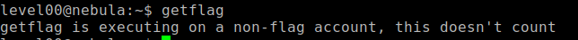
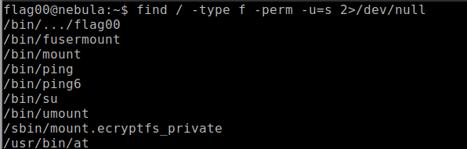
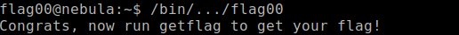
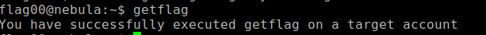

Aprovechar vulnerabilidades del sistema
Nota importante: Cada vez que hago esto, coloco intrucciones a gdb que creo son muy necesarios, ya que cada que el debugger abre una aplicación, lo hace en un espacio de memoria relativa y al colocarle, unset env LINES y unset env COLUMNS, GDB muestra el uso de memoria real o muy cercano al que usa realmente la aplicación, facilitando la explotación de la vulnerabilidad.
Ejecutamos la aplicación para ver que hace.
Como menciona la instrucción, nos pide que busquemos la aplicación que tenga permisos de ejecución root, esto es básico en busquedas que ya se han realizado en vulnhub.
Podemos ver que es el primero que nos sale, pero que hicimos... esto es solo una busqueda de find, pedimos tipo de archivo (-f) es regular file, solo busca archivos... seguido de perm, que ponemos que busque en el usuario archivos con permisos SUID, osea, root... y para terminar eliminamos posibles errores innecesarios con 2>/dev/null.
Lo ejecuamos y da un buen resultado, ahora hagamos otra vez lo de getflag.
Listo.